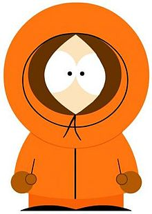
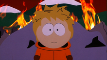
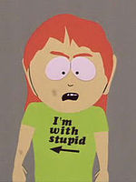
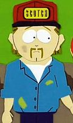

Персонаж «Южного парка»

Кеннет/Кен «Кенни» МакКормик
| Пол: | мужской |
| Цвет волос: | блондин |
| Возраст: | 9 |
| Профессия: | ученик 4-го класса |
| Вероисповедание: | католик |
| Первое появление: | "Дух Рождества. Иисус против Фрости" под именем Эрик |
| Озвучивает: | Мэтт Стоун
Эрик Стоф (без капюшона) Майк Джадж (без капюшона (полнометражный фильм)) |
С момента выхода сериала вплоть до эпизода 513 главной особенностью Кенни являлось то, что он умирал почти в каждой серии, вслед за чем его друзья Стэн и Кайл неизменно кричали:
Господи! Они убили Кенни! Сволочи!
Oh my God! They killed Kenny! You bastards!
Другой отличительной чертой Кенни является его оранжевая парка с капюшоном, из которой он почти никогда не вылезает. Из-за капюшона, полностью закрывающего его рот, Кенни бормочет все свои реплики очень неразборчиво (что не мешает всем остальным героям сериала прекрасно его понимать). Впрочем, они обычно слишком нецензурны, чтобы произносить их внятно и отчётливо. Создатели сериала обычно отказываются от разъяснения реплик Кенни, но носителям английского языка они довольно хорошо понятны на интуитивном уровне.
В полнометражном анимационном фильме «Саус-Парк: большой, длинный и необрезанный» перед тем, как отправиться в Ад, он всё же снял свой капюшон, благодаря чему стало доподлинно известно, что Кенни — блондин с пышной причёской и голосом, напоминающим (среди главных героев) голос Стэна.
Семья Кенни очень бедна, а его отец — алкоголик, за что его друзья, в особенности Картман, регулярно над ним издеваются. Несмотря на всё это, Кенни является душой компании, а некоторые из его смертей являются достойными актами самопожертвования.
До конца 11 сезона роль Кенни постепенно уменьшалась. Тем не менее, создатели всегда подчёркивают, что Кенни является важной частью сериала и шоу всегда было и будет посвящено четырём мальчикам (что и доказывают, сделав роль Кенни более значительной с 12 сезона — в каждом сезоне уже минимум по одному эпизоду с Кенни в главной роли)[2].
День рождения Кенни — 22 марта. В этот день в 2008 году поиск по блогам Яндекса (http://blogs.yandex.ru/) вместо «популярных записей» поместил на сутки на главную страницу изображение Кенни и надпись «Сегодня день рождения Кенни. Больше обсуждать нечего»[3], а «Пульс блогосферы» был переименован в «Пульс Кенни»[4].
Номер дома Кенни — 635 (табличка с указанием номера отсутствует, однако в эпизоде «Куролюб» диспетчер полиции среди прочих упоминает адрес МакКормиков).
В 8 серии 14 сезона становится известно, что Кенни — фанат гонок NASCAR.
Смерть Кенни является ярчайшей чертой персонажа. Некоторое время даже в заставке Кенни касалась рука Смерти. Были случаи, когда Кенни умирал более одного (2 или даже 3) раза за одну серию. Однако, в 13 серии 5 сезона («Кенни умирает») Кенни умер не обычно, а так, что все придали этому значение, от серьёзной болезни. Спустя сезон он без объяснения причин вернулся, и на вопрос: «Ты где был, Кенни?», — ответил: «Да так, тусовался…», и начиная с этого момента Кенни умирает лишь изредка.
К смерти Кенни практически в каждом эпизоде настолько привыкли его друзья, что часто они ждали, когда это произойдёт и удивлялись, если Кенни к концу эпизода оставался жив (так, например, происходит в эпизоде 110). Так, в серии 203, когда на Кенни падала машина, но он выжил, Стэн сказал: «О боже, они убили… А, ничё», — повторив фразу после очередного несчастного случая; наконец, как только в Кенни попал Куролюб, Стэн рассердился из-за того, что Кенни опять встал на ноги, но на сей раз его комментарий звучал «О боже они убили… Да блин!» Тем не менее, друзья не помнят предыдущих смертей Кенни (если верить 12-13 сериям 14 сезона) и реагируют на каждую по-разному: иногда с интересом, иногда равнодушно (например, несколько раз Стэн и Кайл сами убивают Кенни и говорят «Мы убили Кенни. Мы сволочи»), иногда очень терзаясь по этому поводу. Картман - единственный из персонажей, кто помнит о его предыдущих смертях.
Интересно, что в 6 серии 4 сезона мать Кенни беременеет и в конце серии, после смерти Кенни, рожает мальчика, точь-в-точь на него похожего. Вместе с мужем они решают назвать его Кенни, в честь погибшего брата. Напоследок родители говорят, что это уже в 52 раз. Однако, этот намёк на природу возрождений Кенни не согласуется с другими эпизодами — к примеру, в серии «Мамаша Картмана по-прежнему грязная шлюха» он материализуется из воздуха, в серии «Джунгли-Шмунгли» он был поражён молнией, но спасён подружкой, а в эпизоде «Суккуб» тело Кенни валяется на автобусной остановке и поедается крысами ночью, после чего утром он вновь стоит на остановке вместе с друзьями как ни в чём ни бывало. Все же эта теория получила подтверждение в эпизоде «Енот против Енота и друзей» — мать Кенни родила его после очередной смерти. До этого было показано, как Кенни после смерти просыпается в кровати уже четвероклассником, это означает, что он взрослеет за ночь.
Из серии «Бой калек», видно, что возможно виной каждой смерти Кенни является сочетание его парки и невезения (Джимми, надев эту парку, в течение своей прогулки по улицы постоянно оказывался на грани гибели). А в серии «Всё ради поражения», где Кенни одет в форму бейсбольной команды, с ним ничего опасного не происходит. Эту теорию немного опровергают эпизоды «Джефферсоны», «Ссули», «Мистерион восходит», «Енот против Енота и друзей» (Кенни в этих эпизодах умирает без парки).

Появление Кенни без капюшона в финале фильма «Саус-Парк: большой, длинный и необрезанный».
Другой яркой чертой Кенни является парка, которую он носит, не снимая, практически во всех эпизодах, что его делает сильно похожим на фен. Тем не менее известно несколько эпизодов, где Кенни так или иначе появляется без капюшона:
Кенни является, пожалуй, самым «испорченным» (сексуально озабоченным) из четвёрки главных героев; его мысли посвящены в основном девушкам, алкоголю и тому подобным темам. Кенни сексуально осведомлённее своих друзей и является в этом вопросе авторитетом даже для Шефа. В эпизоде 1301, когда друзья сказали Кенни, что его девушка — шлюха, это довело его до экстаза. В этой же серии он умирает из-за того, что он заболел сифилисом, а Картман говорит: «Я говорил ему, рот американской женщины самое грязное место на Земле, говорил же!». Смерть Кенни не показана, показаны только похороны. Кроме того, он легко способен пить алкоголь любой степени крепости; в эпизоде «Вулкан» он вызывает восхищение Джимбо тем, что отхлебнул из канистры с бензином. В эпизоде «Внушительные буфера» Кенни становится наркоманом, подсев сначала на запах кошачьей мочи, а потом — на галлюциногенные цветы, поскольку наркотики помогают ему оказаться в мире фантазий, где он путешествует на роскошных машинах и купается с большегрудой красоткой.
Несмотря на «испорченность», Кенни довольно добрый и талантливый мальчик. В эпизоде «Иубилей» он в одиночку разрабатывает и осуществляет план по спасению лагеря еврейских скаутов. В самый критический момент он добровольно приносит себя в жертву, несмотря на то что ранее он был изгнан из лагеря. В серии «Пятерняшки 2000», после посещения выступления французского цирка Дю Шевиль Стэн, Кенни, Кайл и Картман, особенно впечатлённые пятерняшками-акробатками из Румынии, загорелись идеей создать собственный цирк. Мальчики решили, что Кенни для выступлений стоит научиться хорошо петь, и он начал брать уроки пения при помощи обучающих аудиозаписей. В итоге ему посоветовали поступить в какую-нибудь европейскую консерваторию, и Кенни поехал с матерью в Румынию, зарабатывая пением деньги на дорогу. Приехав в Румынию, Кенни произвёл сенсацию, и ему предложили остаться там жить. Так как в Румынии очень низкий уровень жизни и двести долларов, которые Маккормики получают в качестве пособия по безработице в США, являются солидной суммой, Кенни с матерью решили остаться. Правда позже его непреднамеренно убивают американские солдаты. В серии «Лагерь для толстяков» одноклассники подговаривали Кенни делать за деньги мерзкие вещи. Довольно быстро Кенни «вошёл во вкус», и вскоре он стал популярным ведущим своего собственного «Шоу безумного Кенни». Успешной карьере шоумена помешал его арест за проституцию. В сериях «Тяжёлый христианский рок», «Китовые шлюхи» он играет на ударных установках (в серии «Тяжелый христианский рок» Кайл замечает, что в музыке Кенни предпочитает латино-джаз). В серии «Лучшие друзья навсегда» Кенни лучше всех в городе играет на PSP в игру «Рай против Ада», в игре он быстро добирается до 60-го уровня. Узнав об этом, в Раю организуют его смерть (так как PSP была создана Богом, чтобы выявить «нашего Киану Ривза» — человека, способного командовать ангельскими силами в бою против Ада, как в игре). В Раю Кенни принимает командование над армией Рая (по словам архангела Михаила, силы Ада составляют «миллиардов десять, может и больше», силы Рая — «всего около десяти тысяч» (то есть соотношение сил 1:1 000 000 в пользу Ада). Несмотря на столь значимую разницу в силах сторон, в последующем сражении Кенни наголову разбивает армию Сатаны.
Полное имя Кенни — тоже загадка. Фанаты предпочитают вариант «Кеннет», но в некоторых эпизодах (например, «Голубой Саус-Парк», «Марджорин», «Внушительные буфера» и «Кольцо») его называют Кен, хотя это может быть его ещё более сокращённое имя. Однако в эпизоде «Бедный ребенок» приемный отец называет его «Кеннет».
В 12 серии 14 сезона выясняется, что Кенни — супергерой Мистерион, единственный из всей компании «Енот и друзья» обладающий настоящей суперсилой. Позже выяснится что суперсилой также обладает Мятно-ягодный хруст.
Впервые Мистерион появляется во второй серии 13 сезона, но его личность так и не раскрывается. Мистерион носит темный плащ с капюшоном, на котором прикреплен знак вопроса на пружинке, маску, серое трико с одетыми поверх трусами и коричневые сапоги. Также он, как Бэтмен в «Темном Рыцаре», меняет голос на более басовитый и устрашающий.
Он появляется вскоре после того, как Картман становится супер-героем «Енотом» и рассказывает о нем в классе. Видимо, наслушавшись Картмана, Кенни и вдохновляется тоже стать супер-героем. И в отличие, от Картмана он здорово преуспевает в этом и становится очень известным, чем крайне злит Эрика. В конце концов Картман вынуждает Мистериона раскрыть свою личность (однако хоть он и снимает маску, волос при этом невидно, а из-за схожести лиц всех персонажей понять кто это было невозможно), после чего его сажают в тюрьму за самосуд. Но в вырезанном фрагменте серии показано, что на самом деле это был Кайл, который переоделся Мистерионом, чтобы его посадили в тюрьму вместо него. В этом же фрагменте Кайл просит Мистериона сказать ему, кто он такой на самом деле. Тот охотно снимает маску, но, опять же, зрителю непонятно, кто это такой.
В дальнейшем развитие сюжета с Мистерионом происходит в 11-13 эпизодах 14ого сезона, где главные герои формируют команду героев под предводительством Енота. В 12 серии Кайл обращается к Мистериону как к Кенни, чем и раскрывает его личность. В той же самой серии раскрывается одна из главных интриг сериала — секрет бессмертности Кенни. Мистерион рассказывает, что каждый раз он попадает то в рай, то в ад, а потом просыпается в одной и той же постели в одной и той же одежде.
Облачаясь в Мистериона, Кенни становится мрачным, серьезным и загадочным. Если обычно он стоит в стороне и отмалчивается, то как Мистерион он способен взять на себя лидерство и действовать решительно. Именно как Мистерион он впервые высказывает друзьям свое недовольство тем, что он все время умирает, а никто об этом даже не помнит. Однако типичные черты Кенни, такие как склонность к самопожертвованию и к сквернословию, проявляются и тут.
В 13 эпизоде выясняется, что всякий раз при его смерти, его мать рожает его заново, после чего они с отцом одевают младенца в одежду Кенни. А за ночь он, видимо, вырастает до своего текущего возраста.
Использование петард во 2-ой серии 13 сезона, самоубийство в 13-ой серии 14 сезона с помощью пистолета, так же имя Мистерион отсылка к суперзлодею Мистерио из Человека-Паука. Мистерио был специалистом по спецэффектам (Кенни смог позволить себе только петарды), Мистерио так же как и Мистерион покончил жизнь самоубийством (выстрелом в голову).
В 14 серии 15 сезона Кенни опять облачается в костюм Мистериона, но не ради борьбы со злом, а для того, чтобы вселить надежду в свою сестру.

Миссис Маккормик.
Имя матери Кенни ни разу не произносилось в сериале. Некоторые фанаты ошибочно полагают, что её зовут Кэрол, на основании диалога Стюарта и нового руководителя скаутов в эпизоде «Бой калек»; однако в действительности в этом диалоге идёт речь о жене руководителя скаутов по имени Кэрол[6]. Тем не менее, фанаты закрепили это имя за миссис Маккормик ввиду его универсальности (это имя носил ряд других женских персонажей, в том числе Шерон Марш и Шейла Брофловски в эпизоде «Смерть»). В эпизоде «Куролюб» упоминается, что у миссис Маккормик есть двоюродный брат и племянник, которые гостят у Маккормиков.
Обычно миссис Маккормик носит грязную зелёную футболку с надписью «I’m With Stupid» (рус. Я с дураком) и стрелкой. В эпизоде «Картман вступает в NAMBLA» миссис Маккормик можно заметить в футболке такого же цвета с надписью «God Bless America» (рус. Благослови Бог Америку) и американским флагом. В том же эпизоде во время похода на аттракцион, а также в значительной части эпизода «Лучшие друзья навсегда» миссис Маккормик появляется в тёмно-зелёной футболке без надписей. Также миссис Маккормик носит грязные штаны. В церкви её можно заметить в мини-юбке и куртке из искусственного меха.
Миссис Маккормик ненавидит своего мужа, Стюарта, за алкоголизм и постоянную безработицу. Она частенько его избивает, что Кенни и Кевин воспринимают со смехом (эпизод «Куролюб») или с равнодушием. Тем не менее, в эпизоде 406 пара неожиданно изъявляет желание завести ребёнка, что не мешает им продолжать ругаться в последующих сериях. Судя по тому, что миссис Маккормик едва ли приносит какие-то деньги в дом, а её любимый коктейль — водка с какао, можно предположить, что она также безработная и также пьёт. Однако, несмотря на то, что она, кажется, вообще не следит за домом, миссис Маккормик умеет и любит вязать.
Несмотря на натянутые отношения с мужем, миссис Маккормик, судя по всему, очень любит своих детей (по крайней мере Кенни), хотя и кричит и не стесняется выражаться при них. Она очень рада, когда Кенни удаётся стать оперной звездой Европы («Пятерняшки 2000»), переживает после «окончательной» смерти Кенни («Лестница в небо») и внушает сама себе, что Кенни ещё может с ней общаться, когда он лежит в реанимации в состоянии овоща («Лучшие друзья навсегда»). Тем не менее, в полнометражном фильме «Саус-Парк: большой, длинный и необрезанный» миссис Маккормик поддаётся влиянию Шейлы, вступая в антиканадскую организацию и способствуя войне.
Миссис Маккормик, как и её муж и даже в большей степени, очень религиозна (как и почти все жители города, Маккормики — католики). Но в 309 эпизоде Кенни пытался притворятся Иудеем — его раскрывают и сначала выгоняют, но потом он спасает евреев от Амана. В полнометражном фильме миссис Маккормик требует от Кенни посещать церковь, пугая его адом. Миссис Маккормик всегда молится перед едой; можно заметить Маккормиков молящимися на похоронах или после одной из смертей Кенни. После своей «окончательной» смерти Кенни был кремирован, что не рекомендуется христианской церковью; однако, многие христиане всё равно так поступают.

Стюарт Маккормик
Отец Кенни — Стюарт Маккормик. Стюарт алкоголик, носит грязную рубашку и штаны, а также водительскую кепку с надписью «Scotch». В эпизоде 203 упоминается, что у Стюарта есть другие родственники, помимо перечисленных, — брат, его подруга и её мать, которые также частенько бывают в доме Маккормиков (как говорит по этому поводу Картман: «Бедняки имеют обыкновение жить скученно»). Также в сериале упоминается отец Стюарта — Джеральд говорит, что он алкоголик.
Известно, что в детстве Стюарт и отец Кайла, Джеральд Брофловски, были лучшими друзьями и вместе работали в пиццерии. Однако потом их пути разошлись: Джеральд получил повышение и уехал учиться в колледж, а Стюарт спился. Их жёны делают попытку примирить старых друзей в эпизоде «Ветрянка», однако совместная поездка на рыбалку завершается дракой.
В эпизоде «Картман вступает в NAMBLA» на долю Стюарта приходится множество испытаний. Они с женой хотят завести нового ребёнка; пытаясь помешать этому, Кенни добивается того, что у его отца оказываются разбиты яички, его постоянно тошнит, а в итоге его насилуют тридцать сорокалетних мужчин. Тем не менее, после гибели Кенни Маккормики всё же заводят ребёнка — им оказывается новый Кенни.
Во-многом из-за алкоголизма Стюарта семья Маккормиков является одной из беднейших в городе. Уже в эпизоде «Конъюнктивит», ещё до появления Стюарта в сериале, Картман упоминает о его пристрастии к виски. Словно в подтверждение этого он впервые появляется в кепке с надписью «Скотч». В дальнейшем выясняется, что по причине пьянства и безработицы жена Стюарта люто ненавидит своего мужа. К примеру, в эпизоде «Куролюб» они появляются в качестве героев сериала «Копы», избивая друг друга под смех Кенни и Кевина. Хотя в эпизоде 406, когда они хотят завести ребёнка, видимо, у них происходит потепление в отношениях, в дальнейших сериях («Лучшие друзья навсегда», «Занимайтесь любовью, а не Warcraft'ом») снова видны ссоры и драки в семье Маккормиков. Помимо алкоголя, Стюарт увлекается чтением «Playboy».
Бедность Стюарта и его семьи проявляется во всём: к примеру, их типичный ужин составляют мороженые вафли, а завтрак — бутерброды с хлебом. Маккормики не могут насладиться даже подаренной им банкой зелёного горошка, потому что у них дома нет открывашки. Тем не менее, иногда Кенни неожиданно оказывается способен сделать серьёзную покупку: приставку PSP (904) или даже компьютер (1008).
Как и его жена, Стюарт весьма религиозен и каждый раз произносит перед едой молитвы (звучащие порой не совсем ортодоксально, например: «Надеюсь, Бог, что ты когда-нибудь принесёшь нам счастье, хотя ты и очень занят своим приятным времяпрепровождением»). В эпизоде «Пылкая католическая любовь» Стюарт выступает против массового перехода взрослых города к атеизму.
Сложно сказать, какие взаимоотношения у Стюарта с детьми. Стюарт, видимо, переживает, когда Кенни попадает в кому или умирает от неизлечимой мышечной болезни; в эпизоде «Пятерняшки 2000», когда Кенни с матерью переезжают в Европу, он пытается вернуть сына обратно, хотя тому на него совершенно наплевать. Однако, судя по переживаниям Кенни из-за нового ребёнка в эпизоде 406, ему важно внимание его родителей.
Начиная с эпизода 113, Стюарта регулярно можно увидеть в баре Саут-Парка, среди мужчин города. Он выступает частью их общей компании, хотя, видимо, не имеет ни с кем особенно близких отношений.
У Кенни есть брат — Кевин Маккормик, сестра Карэн Маккормик.
Кенни является частью общей компании четвероклассников и «четвёрки» главных героев Стэн-Кайл-Картман-Кенни. В ранних сезонах можно заметить, что Кенни предпочитает проводить время с Картманом (поскольку Стэн и Кайл являются между собой лучшими друзьями) и во многом его поддерживает, часто они вдвоём что-то делают назло Стэну и Кайлу (например в серии «Домики для игр» они, узнав, что Стэн и Кайл не позвали их строить домик на дереве, в отместку решили построить свой). Эрик называет себя его лучшим другом дважды (серии «Кенни умирает» и «Лучшие друзья навсегда»), они на пару носят свои медальоны «Best Friends Forever», как Кайл и Стэн; в эпизоде «Тампоны из волос чероки» Кенни играет с Эриком, пока Стэн пытается решить проблемы серьёзно больного Кайла. Но, судя по тому, что Картман в этих же сериях пытается использовать смерть Кенни в своих интересах (в серии «Кенни умирает», добившись разрешения на исследование стволовых клеток, вместо того, чтобы помочь Кенни вылечиться от болезни, Картман хочет с их помощью построить собственную пиццерию; в серии «Лучшие друзья навсегда» — получить по завещанию игровую приставку Кенни, для этого он разворачивает публичную кампанию, чтобы Кенни отключили от систем жизнеобеспечения), его слова про дружбу ничего не означают. Судя по завещанию Кенни, оглашённому после его очередной смерти в серии «Лучшие друзья навсегда», а также по многим другим эпизодам, Кенни презирает Картмана и по-настоящему тепло относится только к Стэну и Кайлу, и позже Кенни «перешёл на их сторону», что особенно заметно в сериях «Тяжёлый христианский рок», «Кое-что о том, как пришёл Wall-Mart», «Смерть Эрика Картмана», «Деньги в обмен на золото». Кроме того, Картман часто издевается над бедностью семьи Кенни, что однажды («В погоне за рейтингами») привело к тому, что Кенни оставил свою компанию и присоединился к компании Крэйга.
Кенни готов умереть, чтобы спасти кого-то из друзей. К примеру, он жертвует собой, чтобы Картман узнал, кто его отец, или чтобы Сатана мог предотвратить последствия канадо-американской войны. Картман, зная об этом качестве Кенни, часто провоцирует его на опасные действия. Также, Кенни в силу бедности своей семьи готов на многое ради денег. Так, из-за денег и подстрекательств одноклассников, Кенни съел селезёнку ламантина, а потом под руководством друзей начал бизнес, делая на публике мерзкие вещи за деньги.
После смерти Кенни, когда его не было в сериале в течение сезона, Стэн, Кайл и Картман проводили кастинг среди одноклассников, чтобы кто-то заменил Кенни в их компании. В итоге, друзья пришли к выводу, что «Кенни был лучшим», а те, кто пытался заменить его, были «не-Кенни».
Также Кенни является одним из немногих, кто почти не обижает Баттерса в классе, вероятней всего потому, что Кенни является Баттерсу «товарищем по несчастью» — тоже страдает от издевательств Картмана и понимает его, за что Баттерс считает его своим другом (в серии «Внушительные буфера» видно, что Баттерс очень тепло относится к Кенни. Правда, в серии «Славные времена с оружием» Кенни попал сюрикэном в глаз Баттерсу; в свою очередь, Баттерс активно участвует в «намыливании» Кенни носками в серии «Вшивые приключения»). Определённо Кенни, сам того не понимая, «серый кардинал» четвёрки, скрытые таланты которого проявляются не часто, но очень заметно.
В серии «Джунгли-Шмунгли» Кенни влюбился в девочку из хора, Келли (которая спасла ему жизнь), и в следующем эпизоде в начале хотел поехать на автобусе к ней, но самовозгорелся. Судя по всему, узнав, что Кенни «умер», Келли порвала с ним отношения и уехала. В первой серии 13 сезона «Кольцо» у Кенни снова появляется подружка, но уже другая, хотя, с ней тоже не всё гладко — Кенни заражается от нее сифилисом и умирает.
У Кенни большая семья. Помимо отца и матери, у него есть брат Кевин, сестра, а также множество двоюродных родственников (их перечисляет Стюарт в эпизоде «Куролюб»). Кенни всегда стремится помочь своей семье, ворует для них еду и обижается, когда над его родителями издеваются за бедность и алкоголизм. Тем не менее, их с Кевином очень смешат постоянные драки отца и матери. Также у Кенни есть дедушка — он упоминается в «Ветрянке» и появляется в эпизоде «Лагерь для толстяков», где Кенни за деньги соглашается сделать ему эротический массаж. Судя по эпизоду 1514, Кенни очень любит свою сестру, заботится о ней и защищает как может, даже в виде Мистериона.
Всего на момент 13 серии 5-ого сезона он умирал 70 раз, считая полнометражный фильм «Саус-Парк: большой, длинный и необрезанный», а также двойную смерть в эпизодах 208 и 303. С 6-го сезона по 12-ю серию 14-го Кенни умер в 13 сериях. В 13-й серии 14-го сезона Кенни умирает трижды, причём все три раза причиной его смертей были самоубийства. В 15-м сезоне Кенни умирает лишь единожды. Итого на 15 сезонов 88 смертей и одна смерть в полнометражном фильме «Саус-Парк: большой, длинный и необрезанный».
| Код серии | Название серии | Смерть |
| 101 | Картман и анальный зонд | Кайл через Картмана требует от инопланетян возвращения его братишки. Появляется летающая тарелка, в которую Кайл бросает камень. Она стреляет в ответ из энергетического оружия, но попадает в Кенни, которого отбрасывает на дорогу. Стэн произносит часть коронной фразы: «О боже мой, они убили Кенни». Но Кенни встаёт как ни в чём не бывало, после чего его перебегает стадо испуганных коров. Тот опять встаёт, однако его переезжает на автомобиле офицер полиции Барбреди, который преследует коров. Кенни окончательно умирает. Однако Картман, будучи свидетелем всего, всё равно не верит в инопланетян и в смерть Кенни. Стэн демонстрирует Картману, что Кенни действительно мёртв, ударяя труп палкой, а Кайл отрывает у Кенни голову. Картман уходит, не реагируя. Кайл и Стэн в дальнейшем разговаривают, не обращая внимания на Кенни, несмотря на то, что его труп обгладывают и растаскивают крысы. В невыпущенной версии эпизода, вышедшей позже на DVD, Кенни в конце серии появляется живым на автобусной остановке. |
| 102 | Набор веса 4000 |
| 104 | Большой Эл-гомосек и его гомояхта | Во время отсутствия Стэна Кенни оказывается единственным, кто достиг какого-либо успеха на матче по американскому футболу. Однако на линии 30 ярдов команда соперников Саут-Парка хватает его за руки и за голову и разрывает на части. Крысы немедленно начинают его пожирать. Кайл произносит коронную фразу. Диктор говорит о том, что это, наверное, больно. Шеф возмущается: «Это была грубая игра. Дайте хоть нам соскрести его с газона». |
| 105 | Слон занимается любовью со свиньёй | Генетический клон Стэна, пребывая в агрессивном настроении, разрушает всё подряд у Стэна дома и мимоходом ударяет Кенни так, что тот отлетает в микроволновую печь. Печь включается и Кенни начинает жариться внутри, что никого не заботит. После того, как Мефесто убивает клона, обгоревший скелет Кенни в парке выпадает из печи, и Кайл произносит: «О боже мой, они убили Кенни! Сволочь!» (обращаясь к микроволновой печи). Позже, когда Стэн начинает рассуждать о дружбе, скелет Кенни разрывают крысы. |
| 106 | Смерть | Смерть с косой значительную часть эпизода гоняется за друзьями. В конце концов она догоняет их, поворачивается к Кенни и дотрагивается до его головы правой костяной рукой. Кенни замертво падает с закрытым левым глазом; впервые становится понятно, кто именно был нужен Смерти. Кайл произносит коронную фразу: «О боже мой, они убили Кенни! Сволочь!». Дух Кенни, облачённый в парку, исчезает вместе с духом прадедушки Стена. «Ладно, чуваки, пошли домой» — говорит Стэн, и они расходятся, а крыса оттаскивает труп за кадр. |
| 107 | Конъюнктивит | Накануне Хэллоуина на орбитальной станции «Мир» загорается лампочка «внимание, одна проблема». Космонавты с голландскими нашивками говорят: «Вот дерьмо!». Станция падает прямо на Кенни, стоящего с друзьями на автобусной остановке. Стэн произносит первую часть коронной фразы: «О боже мой, они убили Кенни!»; Кайл заканчивает: «Сволочи!». Картман дополняет: «Что за хрень?». Скорая отправляет Кенни в морг, где из него выкачивают кровь и заливают бальзамирующую жидкость. Из-за небрежности работников морга бутылка с соусом попадает в бальзамирующую жидкость; Кенни открывает глаза и, вытянув руки перед собой как зомби, направляется на прогулку. В дальнейшем становится понятно, что Кенни уже умер, а его тело живёт в виде зомби. Покусав работников морга, Кенни-зомби выходит на улицу. Все покусанные заражаются и также превращаются в зомби. После того, как в службе поддержки компании, сделавшей соус, сказали, что необходимо убить первого зомби, Кайл распиливает Кенни. Затем он говорит: «О боже мой, я убил Кенни! Сволочь!». В этот раз Картман, Кайл и Стен приходят на могилу Кенни. Они грустно говорят об этом, а Картман даже плачет. После того, как они расходятся, Кенни вылезает из земли, все его части сшиты. Однако тут же на него сваливается чья-то статуя, на которую падает самолёт. |
| 108 | Дэмиен | Кенни говорит гадости про маму Дэмиена и тот, благодаря тому, что обладает дьявольской силой, превращает его в утконоса. Позже на ринге его видит Джимбо, заядлый любитель охоты, и с криком «Он хочет на нас напасть!» (который для Джимбо служит оправданием при убийстве любого животного) пристреливает Кенни. |
| 109 | Кошмарный Марвин | Толпа сумасшедших индеек нападает на жителей Саут-Парка. Три индейки атакуют Кенни, и одна из них выдирает его глаз. Когда Стэн извлекает мораль после окончания «битвы», из глазницы Кенни вылезает крыса и убегает. |
| 110 | Мистер Хэнки, рождественская какашка | Единственная серия первого сезона, где Кенни не умер — возможно, это следует считать рождественским чудом, приуроченным к первому рождественскому эпизоду. На протяжении всей серии иронично обыгрывается неизбежность смерти Кенни: его посылают на самые опасные задания, он попадает в сложные ситуации (вытащить из розетки, вокруг которой разлита вода, все шнуры, или залезть на самый верх лестницы, расположенной над бассейном с акулой). Когда в конце все герои стоят перед нами (живой Кенни — среди них), Стэн говорит: «Знаете, мне кажется, что как будто бы что-то не так»; Картман добавляет: «Да, как будто бы что-то не закончено». Кайл спрашивает: «И что же это может быть?» После недолгой паузы на экране появляется надпись «The End» (Конец), и Кенни вопит от радости. |
| 111 | Ринопластическая клиника Тома | Когда иракцы задерживают новую учительницу третьего класса мисс Элен, она, пытаясь защищаться, выхватывает саблю у иракца. У неё не получается её удержать, и сабля летит прямо в Кенни, приколов его к стене. Стэн говорит: «О боже мой! Она убила Кенни!» |
| 112 | Меха-Стрейзанд | Когда Меха-Стрейзанд разрушает город, рядом с Кенни всё рушится и падает, однако он остаётся невредим. Смерть настигает его, когда он как ни в чём не бывало играет с мячом на веревке — мяч подталкивает Кенни вверх и верёвка обматывает его шею, задушив до смерти. |
| 113 | Мамаша Картмана — грязная шлюха | Пытаясь завести карт, Кенни потерял над ним управление. Его понесло через лес и многие другие препятствия. Стэн и Кайл наблюдали за этим с ужасом, но в конце концов Кенни вроде бы встал и оправился. Однако, когда Кенни помахал рукой друзьям, его сбил поезд — оказалось, что карт остановился на рельсах. Стэн произнёс: «О боже мой! Они убили Кенни!»; Кайл добавил: «Сволочи!» Позже неожиданно выяснилось, что дедушка Марш снял смерть Кенни на плёнку — и, обойдя Стэна и Кайла, выигрывает с этой записью в программе «Тупейшие домашние видео Америки». Увидев это, Стэн говорит: «О боже мой, они сняли на видео смерть Кенни!», Кайл заканчивает: «Сволочи!» Следует отметить, что во второй части этого эпизода — серии 202 Кенни воскресает и снова погибает. |
| Код серии | Название серии | Смерть |
| 201 | Не без моего ануса | Кенни не умер, потому что ни разу не появлялся в серии. |
| 202 | Мамаша Картмана по-прежнему грязная шлюха | В самом начале серии, после того, как доктор Альфонс Мефесто падает на пол, сражённый выстрелом, Кенни восклицает: «О боже мой, они убили Мефесто!». В больнице, для включения аварийного генератора для госпиталя главный врач решил разбить группу на две команды. Команда А состояла из Доктора, Стена, Кайла, Эрика, Шефа и сестры Гудли. Команда Б состояла из Кенни. План: «команда Б должна пробраться через бурю и пройти через канализационный туннель, в то время как команда А отправится в помещение для отдыха, где есть телевизор и запас какао. Там мы будем пить какао и смотреть семейные телепрограммы. Команда Б, напоминаю это ты, Кенни, должна достичь внешнего ядра генератора. Нужно взобраться на самый вверх, сквозь холод и опасности, и там могут встретиться велоцирапторы. Достигнув верхней точки, ты можешь через это окно отчётливо разглядеть нас, пьющих какао и смотрящих телевизор. Затем ты сможешь войти внутрь генератора и включить его. Вопросы есть?». Эрик отвечает: «Нет. По мне, так звучит очень классно!». После того как Кенни преодолевает канализацию, главный врач сообщает ему по рации о том, что обнаружен другой путь к генератору — удобный отапливаемый коридор. Выслушав ответ Кенни, врач говорит: «Ну тогда забудь об этом»… «Команда А — отбой». Для включения генератора необходимо было замкнуть два провода. Кенни решает замкнуть их собой, чтобы помочь всем пациентам в госпитале, и погибает. Когда мальчики находят труп Кенни, можно заметить, что на нём замёрзли и поедавшие его крысы. |
| 203 | Куролюб | Кенни выходил живым из нескольких опасных ситуаций (на него падает машина, он слетает с качелей и врезается в стену, в него случайно стреляет Куролюб). Во время финальных титров его, однако, придавливает сосной. |
| 204 | Пиписька Айка | Кенни идёт по кладбищу, внезапно падает в могилу, а сверху на него валится надгробный камень; священник и знакомые, хоронившие рядом Айка, сразу проводят погребальную церемонию. Стэн говорит: «О боже мой! Они убили Кенни!»; проходящий мимо Кайл, раздражённый только что раскрытым ему секретом, равнодушно бросает: «Сволочи». |
| 205 | Женщина с приросшим эмбрионом | На чемпионате по доджболу с китайцами один из китайских игроков мячом размазывает Кенни по стене; он висит там до окончания матча. |
| 206 | Мексиканская зырящая лягушка с южной Шри-Ланки | На ток-шоу «Иисус и сотоварищи» искусственно вызвана потасовка. В неразберихе двое зрителей разрывают Кенни пополам. Стэн и Кайл видят это и негодующе кричат: «О боже мой, они убили Кенни! — Сволочи!» |
| 207 | Город на краю вечности | Кенни не умирает, поскольку основное содержание эпизода — сон Стэна, в котором он с одноклассниками вспоминает прошлое. Например, Кенни «вспоминает», как лихо расправился однажды с самой Смертью (аллюзия на эпизод «Смерть», где именно она убила Кенни). Затем Кенни уносит монстр и хотя Стэн и Кайл кричат: «О боже мой, они убили Кенни! — Сволочи!», не показано, убивает ли его монстр. |
| 208 | Лето — отстой | Можно увидеть уникальные кадры из раннего детства главных героев. Они грустят из-за запрета петард и вспоминают одни из своих прошлых летних каникул. Видно, как совсем маленькие, плохо говорящие Стэн, Кенни, Эрик и Кайл играют с пиротехникой. Когда взрывается Кенни, маленькие Кайл и Стэн не забывают про свою коронную фразу «О боже мой, они убили Кенни. Сволочи!» Позже Кенни убит ещё раз — его уничтожает огромный дымовой змей. |
| 209 | Солёные шоколадные яйца Шефа | Кенни стоит у дверей кинотеатра и играет с йо-йо. Внезапно за его спиной открываются двери, и на улицу высыпает толпа зрителей. Кенни затоптан. Двое последних зрителей останавливаются, и один из них подымает с земли монетку, после чего происходит диалог: «О боже мой, я нашёл пенни! — Сволочь!» |
| 210 | Ветрянка | В конце эпизода дети, лежащие в больнице, и родители вместе смеются, поскольку всё закончилось. Внезапно у Кенни останавливается сердце, и он умирает. Стэн и Кайл кричат: «О боже мой, они убили Кенни! — Сволочи!», после чего все дружно продолжают смеяться. |
| 211 | Роджеру Эберту следует отказаться от жирной пищи | Стэн и Кайл запускают гипнотизирующую установку в планетарии на максимум, решив проверить её на Кенни. В результате голова Кенни лопается. Стэн и Кайл кричат: «О боже мой, мы убили Кенни! — Сволочи!» |
| 212 | Домики для игр | Во время вечеринки в клубном домике Картмана беснующаяся толпа затаптывает Кенни насмерть, его тело тут же начинают грызть крысы. Картман в ужасе произносит: «О боже мой, они убили Кенни!», а проходящий в этот самый момент мимо по улице Кайл добавляет: «Сволочи!» |
| 213 | Коровьи дни | Когда Картман падает с быка и не шевелится, Кенни кричит сквозь парку: «О боже мой, мы убили Картмана!», на что Кайл отвечает: «Нет, мы его не убили, он ещё дышит». Позже, на родео Кайл просит Кенни пойти помочь Картману слезть с разъяренного быка. Кенни после недолгого размышления категорически отказывается. В это время бык пробивает заграждение и насаживает Кенни на рог. Стэн и Кайл кричат: «О боже мой, они убили Кенни! — Сволочи!» |
| 214 | Шефская помощь | Во время концерта в поддержку Шефа Оззи Осборн на сцене откусывает голову Кенни, на что Стэн и Кайл кричат: «О боже мой, Оззи Осборн откусил голову Кенни! — Сволочь!» |
| 215 | Страшная рыбка | Кенни пал жертвой зловещей рыбки, подаренной Стэну тётей Фло. Кенни, Картман и Кайл приходят к Стэну в гости; рыбка убивает Кенни, затащив его в свой аквариум и обглодав. |
| 216 | Счастливого Рождества, Чарли Мэнсон! | Когда полиция окружает дом Картманов, Чарльз Мэнсон с дядей Картмана, скрывающиеся от полиции, решают сдаться. Вперед выпускают Кенни с белым флагом. Один из полицейских кричит: «Смотрите, у него в руках белый флаг! Открыть огонь!» Кенни изрешечивают пулями, после чего Чарли Мэнсон кричит: «О боже мой, они убили мальчика в оранжевой куртке!» Кайл добавляет: «Сволочи!» |
| 217 | Гномы | На Кенни падает вагонетка кальсонных гномов, сошедшая с рельсов. Стэн и Кайл будничным голосом говорят дежурные фразы: «Господи, они убили Кенни! — Сволочи!» и возвращаются к разговору с гномами. Гномы в ужасе, однако на их реплики никто не реагирует. |
| 218 | Доисторический ледяной человек | Кенни едет на движущемся тротуаре, наблюдая за «доисторическим ледяным человеком»; его затягивает под ленту и с обратной стороны он выползает в расплющенном виде. Стэн кричит: «О боже мой, они убили Кенни!», однако Кайл, с которым они в этот момент в ссоре, после паузы отвечает: «Чё? Я с тобой не разговариваю» и уходит. |
| Код серии | Название серии | Смерть |
| 301 | Джунгли-Шмунгли | Во время прогулки Кенни со своей подружкой Келли Нельсон в него ударяет молния. Стэн и Кайл выкрикивают дежурное: «О боже мой, они убили Кенни! — Сволочи!» Келли удивленно переспрашивает: «Кто его убил?» Пацаны приходят в замешательство, после чего Стэн говорит: «Ну… Они». А Кайл поясняет: «Эти сволочи» и указывает пальцем в небо. Келли с плачем начинает делать Кенни искусственное дыхание, после чего тот неожиданно приходит в себя. |
| 302 | Самопроизвольное возгорание | Кенни самовозгорается в самом начале эпизода. В дальнейшем выясняется, что это произошло из-за сдерживания им газов во время общения с подружкой. |
| 303 | Суккуб | Смерть Кенни обыграна несколько раз. Когда Стэн, Кайл, Кенни и Картман стоят на улице в ожидании Шефа, проходит день, наступает поздний вечер (Кенни уже не стоит, а лежит мертвый, доедаемый крысами), а затем наступает новый день (Кенни опять стоит живой и невредимый). В церкви суккуб раздавливает Кенни ногой (Стэн и Кайл кричат: «О боже мой, она убила Кенни! — Сволочь!»), а Картман, у которого на глазах медицинская повязка, спрашивает: «Что там с Кенни, всё в порядке?» В самом конце Картман приходит к окулисту с замороженной головой Кенни, чтобы тот стал для Картмана «донором глаз». |
| 304 | Твик против Крэйга | Когда мистер Адлер пытается разрезать себя, приходит Кенни и попадает под станок (в коробку с гвоздями); под его паркой учитель видит своих мёртвых друзей, в результате чего освобождается от мыслей о самоубийстве. |
| 305 | Яковозавры | Чтобы отвлечь Картмана в то время, пока его любимых яковозавров выселяют из города, Стэн и Кайл приводят его в горы, чтобы посмотреть на редкого оленя. Оленем оказывается Кенни с прикреплёнными к голове оленьими рогами. Когда Эрик замечает подвох, он уходит, вслед за ним уходят Стэн и Кайл, после чего Кенни хватает медведь. |
| 306 | Панда сексуальных домогательств | На острове съехавших талисманов ребята встречают Сокола Джимми, повторяющего фразу «Не держитесь за большой магнит, если кто-то включил вентилятор». Чтобы продемонстрировать правоту своих слов, Сокол Джимми даёт Кенни магнит и включает огромный вентилятор; Кенни втягивается туда, и его разносит на мелкие кусочки. Стэн и Кайл говорят коронную фразу, но тут же замечают Панду, которого искали, и забывают про Кенни. |
| 307 | Кошачья оргия | Действие в этом эпизоде происходит параллельно с эпизодами 308 и 309; Кенни появляется и погибает в последнем. |
| 308 | Два голых парня в горячей ванне | Действие в этом эпизоде происходит параллельно с эпизодами 307 и 309; Кенни появляется и погибает в последнем. |
| 309 | Иубилей | Кенни приносит в себя в жертву, разбивая своей головой раковину, в которой заточён Моисей и спасая еврейский народ. Стандартная фраза не произносится (возможно, из-за отсутствия Стэна). |
| 310 | Чинпокомон | У Кенни случается эпилептический припадок во время видеоигры (отсылка к скандально известной серии Denno Senshi Porygon сериала Покемон) и он до конца серии ходит в ступоре, а Картман отгоняет от него крыс со словами «Он ещё не умер!». В конце серии на автобусной остановке Кенни начинает дергаться и из его тела выползает множество крыс. |
| 311 | Кошмарный Марвин в космосе | Кенни в этой серии не умирает, но его замораживали ФБР, как угощение для Салли Стратерс. |
| 312 | Отличная загадка группы Korn о пиратском призраке | После финальных титров Кенни в костюме робота идёт по пристани, где его ниткой связывает игрушечный самолёт, после чего ещё несколько самолётов добивают его. На труп робота набрасываются крысы. |
| 313 | Увлекательная фонетика с обезьянкой | Обезьяна ела угощение, Кенни хотел взять немножко, но та не давала. Началась борьба за сладости, вследствие чего обезьяна убила Кенни. |
| 314 | Алый знак веселья | Кенни присоединяется к «армии» южан под предводительством Картмана, завоёвывающей страну во время глубокого запоя. В одном из городов, пытаясь остановить южан, солдаты национальной гвардии пускают сигнальную ракету, и она убивает Кенни. Стэн говорит: «О боже мой! Они убили Кенни!», однако «Сволочи!» вместо Кайла говорит дедушка Марш, на что тот восклицает: «Эй?!» Согласно письму, которое Картман посылает его матери, Кенни стал единственной жертвой этой войны. |
| 315 | Классические рождественские песни от мистера Хэнки | Во время последней песни этого музыкального эпизода на Кенни падает люстра. |
| 316 | Господь, ты там? Это я, Иисус | Кенни подхватывает кишечную инфекцию, из-за которой из задницы идёт кровь, и, думая, что у него критические дни, засовывает себе в зад тампон. Спустя несколько дней ношения тампона Кенни разрывает изнутри во время заседания «Клуба богинь», куда входят также Картман и Кайл. |
| 317 | Всемирный флейтовый концерт | Кенни умирает из-за того, что обделался до смерти. Однако на последних кадрах его хорошо видно на сиденье, за спиной мистера Гаррисона, рядом с Картманом. |
| Код серии | Название серии | Смерть |
| 401 | Тупое преступление Картмана 2000 | Чтобы заменить Картмана в соревновании на скоростной спуск с горы, ребята выкладывают на санках кирпичи, маскируют их одеждой и пробуют скатиться. Из-за перегруза они не справляются с управлением, Кенни вылетает из саней и врезается в дерево, к которому его тут же припечатывает кирпичами. Комментарий Стэна и Кайла: «О боже мой, мы убили Кенни. — Мы убили Кенни? — Ага, мы сволочи». |
| 402 | Зуб за зуб зубной феи 2000 | Кенни умирает в самом конце эпизода, после титров. Причиной смерти становится утопление. В реку Кенни попадает гораздо ранее, когда его туда скидывают, предварительно прицепив к ногам бетонные грузы, оппоненты Эрика, Стэна и Кайла в борьбе за право проворачивать махинации с молочными зубами. Однако уровень воды в речке невелик и Кенни стоит в воде по колено. Среди суматохи про него все забывают, а в конце видно, что он пытается выбраться из речки, прыгая на своих грузах, в результате чего попадает в глубокое место реки и тонет. |
| 403 | Пятерняшки 2000 | Кенни убивают солдаты при попытке штурма дома в Румынии, куда он вместе с матерью отправился, чтобы стать певцом. Его непроизвольно расстреливает солдат, хотя Кенни с матерью не высказывает попыток к сопротивлению. |
| 404 | Тимми 2000 | Картман убивает Кенни, сильно ударив его сковородой по лицу, поскольку ему под воздействием риталина мерещится маленькая розовая Кристина Агилера на лице у Кенни. |
| 405 | Пип | Кенни не умирает, потому что ни разу не появляется в серии. |
| 406 | Картман вступает в NAMBLA | Всю серию Кенни пытается прервать беременность матери. В финале эпизода его переезжает машина скорой помощи, после чего в больнице мама и папа Кенни любуются на новорождённого. Он в парке, такой же, как у Кенни, и его также называют Кенни. Мама Кенни, говорит что это у них в 52-й раз. (Это совпадает с количеством вышедших эпизодов; сама серия — № 53.) |
| 407 | Тампоны из волос чероки | Кенни сидит со Стэном и утешает его, страдающего от того, что его друг (Кайл) может умереть. Однако, когда Стэн начинает говорить о том, что не мог бы пережить смерть друга и не может представить, каково это, Кенни обижается (видимо, из ревности — ведь его смерть редко воспринимается серьёзно), говорит фирменную фразу Картмана «Идите нахрен, пацаны, я домой» и уходит. В этот момент на него падает рояль. |
| 408 | Шеф теряет терпение | Кенни съедает множество таблеток от живота с содой, думая, что это конфетки. Когда он запивает это водой, его разрывает изнутри; реакцией сидящих с ним детей и Джеральда Брофловски является смех и фраза «О, круто получилось!» |
| 409 | Кое-что, что можно сделать пальцем | Когда Картман стоит на сцене со своей группой Fingerbang и говорит: «Мы приветствуем пятерых участников группы…» — на Кенни опускается лифт и давит его. Стэн и Кайл кричат: «О боже мой, они убили Кенни! — Сволочи!» Позже, во время выступления бойз-бенда с Рэнди вместо Кенни, видно, как работники торгового центра соскребают со дна лифта парку Кенни. |
| 410 | Попадают ли умственно отсталые в ад? | Когда дети переходят дорогу, отправляясь в церковь, Кенни сбивает автобус. Дети решают, что эта кара Божья за грехи и непокаяние Кенни. |
| 411 | Возможно | Серия является продолжением эпизода 410. Оказывается, Кенни, прицепившись к днищу автобуса, не погиб, а попал в Мексику. Об этом он говорит по телефону Картману, но тот врёт пастве своей новой церкви, что Кенни говорит с ним из ада. |
| 412 | Четвёртый класс | Пытаясь отключить бомбу на кресле Тимми, ФБР отправляет Кенни (на тележке, привязанной к машине) обезвредить её. Всё идёт не так, тележка с Кенни переворачивается и везёт его назад. Кенни размазывает по дороге. Увидев это, Стэн говорит: «А я знал, что так будет!» |
| 413 | Школьный портфель | Стэн, Кайл и Кенни стоят около двери в комнату Картмана, в которой он ассимилировался со своим супершкольным портфелем. Решая, кто войдёт первым, Стэн и Кайл говорят «Чур не я», Кенни вздыхает, берёт разбег, чтобы высадить дверь. В это время школьный портфель вырастает из размеров комнаты, вышибает дверь изнутри и впечатывает Кенни дверью в стену. |
| 414 | Хелен Келлер! Мюзикл | Картман хочет подстроить смерть индюка Тимми, Габблза. Для этого он подстраивает падение одного из прожекторов во время репетиции спектакля с участием ребят и Габблза; он долго переставляет Габблза, пытаясь рассчитать падение, однако прожектор падает в другом конце сцены и убивает Кенни. Взрослый участник спектакля, бродвейский актёр, начинает переживать из-за смерти Кенни; дети глядят на него с недоумением. |
| 415 | Лагерь для толстяков | Кенни открыл своё шоу, где он делал гадкие вещи за деньги. Перед самым представлением Кенни отправляют в тюрьму, и его шоу под угрозой срыва. Но Стен и Кайл, раскусив мальчика, который всю серию притворялся похудевшим Картманом и шантажируя его, заставляют участвовать в шоу вместо Кенни (он должен просидеть 6 часов в матке мисс Крабтри). Через 6 часов двойник умирает. Стэн и Кайл комментируют это так: «О боже мой! Они… вроде как убили двойника Кенни… — Сволочи!» |
| 416 | История о мерзком приставании | Смерть Кенни не показана, показано только его тело, прикованное к статуе «Кормильца» рядом с двумя другими трупами. Видимо, Кенни был принесён в жертву «Кормильцу» одичавшими детьми. Взрослые, оказавшиеся в городе проездом, кричат: «Это мальчик! О, Господи, они убили его»! — «Сволочи!» |
| 417 | Очень дерьмовое Рождество | Стэн, Кайл и Кенни выходят из магазина, напевая песенку (они как раз заняты изготовлением рождественского мультфильма). Кенни идёт немного впереди и выходит на проезжую часть, где его тут же переезжает машина. Стэн и Кайл молчат, переглядываются, затем Стэн говорит: «Ничего страшного, в мультике его персонаж тоже умрёт». Продолжается песенка. |
| Код серии | Название серии | Смерть |
| 501 | Скотт Тенорман должен умереть | Когда Скотт Тенорман показывает всему городу видеозапись с Картманом, поющим, что он поросёнок, Кенни умирает от смеха. Видно, как из его тела вылетает продолжающая смеяться душа. |
| 502 | Большая общественная проблема | После частого употребления слова «говно» (англ. shit) люди начинают умирать от страшной болезни, заставляющей их выблёвывать собственные внутренности. Заболевает и Кенни. Когда в конце серии Стэн говорит: «Всё закончилось хорошо, даже Кенни не умер» — Кенни не выдерживает, говорит «говно» и умирает. |
| 503 | Бой калек | Кенни уносит огромная птица во время финальной речи. |
| 504 | Суперлучшие друзья | В этой серии мальчики, являясь членами секты блейентологов, ходят в одинаковых костюмчиках с обритыми головами, что делает их абсолютно неотличимыми друг от друга (кроме Картмана). Когда Стэн во время массового самоубийства перед Белым домом ищет Кайла, он переворачивает лицом вверх ничем не примечательного мальчика-сектанта, внимательно смотрит на него и восклицает: «О боже мой, они убили Кенни!» На что Кайл откуда-то откликается: «Сволочи…» Стэн продолжает выкрикивать «О боже мой, они убили Кенни», вслушиваясь, откуда Кайл кричит «сволочи», идет на голос и таким образом находит друга. |
| 505 | Терренс и Филлип: обратная сторона успеха | Представители организации «Друзья природы» поочередно отрубают у Кенни обе руки и обе ноги из-за того, что мальчики подвели их с концертом Терренса и Филлипа. Когда в конце серии Терренс и Филлип мирятся, Картман поворачивает еле живого Кенни лицом к сцене и говорит: «Смотри, Кенни, всё хорошо!» Фактически Кенни не умирает. |
| 506 | Картманлэнд | Во время катания на аттракционах «Картманлэнда» Кенни напарывается головой на торчащую трубу. Когда чиновники говорят Картману: «Также Вы должны уплатить 500 000 $ штрафа родителям мальчика, который погиб на Ваших аттракционах», тот кричит: «Господи, да Кенни всё время дохнет!» |
| 507 | Правильное использование презерватива | В конце серии все мальчики начальной школы осаждают крепость, которую выстроили против них девочки. После взаимной перебранки у Биби не выдерживают нервы, и она кидает бумеранг. Сперва кажется, что бумеранг попадет в другого мальчика, но тот нагибается и бумеранг попадает в голову Кенни, на что Картман кричит: «Ах ты сука!», — и начинается бой. |
| 508 | Полотенчик | После взрыва в штабе корпорации «Тайнакорп» Полотенчик, Стэн, Кайл, Картман и Кенни оказываются над бассейном с лавой. Кайл не удерживает Кенни, тот падает и сгорает в лаве. |
| 509 | У Осамы Бин Ладена вонючие штаны | Стэна, Кайла, Кенни и Картмана спасают очень похожие на них мальчики из Афганистана. Выйдя из убежища Бен Ладена, они внезапно подвергаются вертолётной атаке; все остаются живы, кроме Кенни и похожего на него афганистанца. Его друзья говорят: «О Аллах! Они убили Кейвана! Сволочи!»; Стэн и Кайл удивлённо смотрят на них. |
| 510 | Как питаться с помощью задницы | В конце серии Кенни переезжает мотоциклист. Картман, увидев это, начал смеяться. |
| 511 | Сущность | Кенни убивает таможенник в аэропорту, приняв щипчики за оружие. |
| 512 | Приходят соседи | Смерть Кенни не показана, однако в финале, когда Токен разговаривает с остальными ребятами, у них с собой — санки с трупом Кенни. |
| 513 | Кенни умирает | На протяжении всей серии Кенни лежит с неизлечимой мышечной болезнью в больнице, вокруг чего и строятся все события. В финале он умирает от неё (как говорит Кайл: «Он просто перестал дышать»). Эта смерть Кенни стала «настоящей» — он не появляется (по крайней мере, в своём теле) в сериале до эпизода «Убить Санта-Клауса», где возвращается и снова становится частью компании. |
Кенни, окончательно умирая в эпизоде 513, долгое время не появляется в сериале. В каком-то смысле он жив, начиная с эпизода «Лестница в небо» — его душа находится в теле Картмана. После этого вокруг души Кенни разворачиваются события, и он в конце концов единственный раз за сезон погибает:
| Код серии | Название серии | Смерть |
| 615 | Самый большой говнюк во Вселенной | После извечения из тела Картмана душа Кенни вселяется в мясной рулет, который в аэропорту съедает Роб Шнайдер. В конце концов Шнайдер погибает, насаживаясь головой на флагшток (отсылка к эпизоду «Набор веса 4000»). |
Кенни погибает лишь в одном эпизоде сезона:
| Код серии | Название серии | Смерть |
| 715 | Рождество в Канаде | Кенни убивает лазерными лучами из глаз «Новый премьер-министр Канады» — на самом деле Саддам Хусейн. |
Кенни погибает лишь в одном эпизоде сезона:
| Код серии | Название серии | Смерть |
| 806 | Джефферсоны | Мистер Джефферсон (на самом деле — Майкл Джексон) хочет «поиграть» со своим сыном Вуалькой и доходит до сумасшествия, чуть не выбросив его из окна. Чтобы спасти Вуальку, дети решают посадить вместо него Кенни в той же маске (Стэн говорит мимоходом: «Наконец-то ты хоть для чего-то пригодишься», намекая на уменьшившуюся роль Кенни в 7-8 сезонах сериала). Когда мистер Джефферсон находит Кенни, он начинает подбрасывать его и в конце концов насмерть ударяет головой о потолок. Следует отметить, что это один из трёх случаев в сериале, когда Кенни говорит без парки, закрывающей рот, и один из трёх — когда он умирает без парки на голове (если считать финал «Большого, длинного и необрезанного»). |
Кенни погибает в двух эпизодах сезона:
| Код серии | Название серии | Смерть |
| 903 | Винг | Кенни убивают во время перестрелки с китайской мафией. |
| 904 | Лучшие друзья навсегда | Кенни достигает 60-го уровня на приставке PSP, радостно выскакивает на дорогу, где его сбивает грузовик (водитель не смотрит на дорогу, потому что тоже играет в PSP, как раз выходя на четвёртый уровень). Кенни попадает в рай, однако спустя почти сутки врачам удаётся его воскресить; он лежит в состоянии овоща в реанимации, его жизнь поддерживается питательной трубкой. Картман, апеллируя к тому, что они с Кенни были «Лучшими друзьями навсегда», добивается отключения Кенни от системы жизнеобеспечения, и тот в конце концов умирает. В серии дважды обыгрывается коронная фраза: когда Кайл и Стэн протестуют против отключения трубки, они скандируют: «Не убивайте Кенни!» — а толпа добавляет: «Сволочи!»; когда Кенни умирает во второй раз, архангел Михаил говорит: «О боже мой, они убили Кенни!». Следует отметить, что это один из эпизодов, где Кенни умирает дважды. |
В эпизодах 10 сезона Кенни не умирает ни разу. В эпизоде 1001, когда умирает Шеф, Стэн и Кайл говорят: «О боже мой, они убили Шефа! Сволочи!» Также фраза используется в своём изначальном виде в серии 1008, когда персонажа Кенни убивают в игре «World of Warcraft».
Кенни погибает лишь в одном эпизоде сезона:
| Код серии | Название серии | Смерть |
| 1114 | Список | Когда Венди и Биби дерутся на крыше с пистолетом, он внезапно выстреливает. Девочки в ужасе поднимаются, но видят, что на них нет ранений. Нам показывают ужинающую вафлями семью Кенни: пуля влетает в окно и пробивает ему голову насквозь и он падает убитым в тарелку. |
В эпизодах 12 сезона Кенни не умирает ни разу, но фраза о его смерти пародируется в эпизоде 1202, когда Баттерс после попытки самоубийства Бритни Спирс говорит главным героям «Вы убили её!». Также, в эпизоде 1207 группа террористов угрожает убить Кенни, взятого в заложники, но Стэн спасает его.
Кенни погибает лишь в трёх сериях:
| Код серии | Название серии | Смерть |
| 1301 | Кольцо | Кенни заражается сифилисом и умирает. Сама смерть не показана, но показаны похороны. |
| 1310 | W.T.F. | Школьный тренер стреляет в Винса МакМэхона из базуки, но ракета падает на ринг к мальчикам, и не взрывается. Кенни подходит, и зацепляется за ракету. Она неожиданно взлетает в небо, и взрывается, сопровождаясь салютами. |
| 1314 | Ссули | Кенни тонет в моче. |
Кенни погиб в трёх сериях (5 раз):
| Код серии | Название серии | Смерть |
| 1401 | Сексуальное лечение | Доктор рассказывает Кенни, Баттерсу и Кайлу о том, что многие дети мастурбируют в костюме Бэтмена. Позже мать Кенни входит в его комнату и застаёт Кенни, подвешенным на дверной ручке в костюме Бэтмена. |
| 1412 | Мистерион восходит | Один из Некромантов убивает Кенни ножом. На следующее утро Кенни просыпается живым. |
| 1413 | Енот против Енота и друзей | В начале серии Кенни, расстроенный тем, что никто не помнит его смертей, стреляет себе в голову. Потом, в середине серии, Кенни снова убивает самого себя (чтобы воскреснуть дома и спасти своих друзей), прыгая на шипы. В конце серии Кенни снова стреляет себе в голову. Впервые за одну серию Кенни погибает три раза, и при этом причиной его смертей были самоубийства. |
Кенни погиб всего один раз за сезон:
| Код серии | Название серии | Смерть |
| 1514 | Бедный ребенок | Был проглочен гигантской рептилоидной птицей, которая была упомянута как возможный Бог в агностическом писании в доме приемной семьи. |
Кенни пока что умер в одном эпизоде:
| Код серии | Название серии | Смерть |
| 1606 | Лучше бы я никогда не ездил на канатную дорогу | Кенни умер от скуки. Звучит фраза "Боже мой, они убили Кенни! Сволочи". Когда Стэн признаётся, что это была его идея поехать на канатную дорогу Картман говорит "Стэн,это ты убил Кенни!", Кайл добавляет "Ты сволочь, Стэн!". |
В Ирландии существует графство с названием Килкенни и город Килкенни, названия которых созвучны с английской фразой, означающей «Убить Кенни». Также существует пиво Kilkenny с таким же названием.